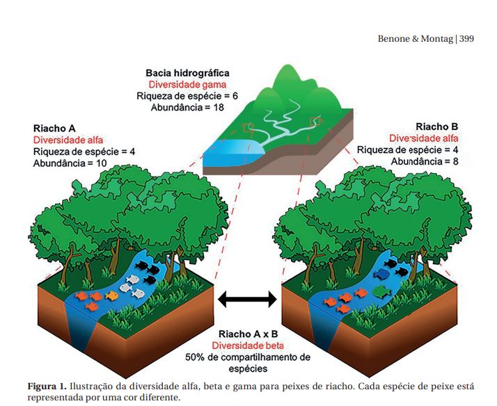

Módulo 2 — Biologia da Conservação no Brasil: Trajetória, Biodiversidade e Infraestrutura de Pesquisa
Slides da Aula
1 Introdução: do histórico global à trajetória brasileira
No Módulo 1, acompanhamos a consolidação institucional da biologia da conservação como disciplina orientada por missão — da criação da Society for Conservation Biology em 1987 e da revista Conservation Biology em 1988 (Meine et al., 2006) até a progressiva incorporação de dimensões humanas, sociais e políticas ao núcleo biológico original (Dyke & Lamb, 2020; Teel et al., 2018). Vimos também como esse processo, embora narrado predominantemente a partir de trajetórias do Hemisfério Norte, precisa ser lido criticamente a partir de historiografias plurais — o que abriu espaço, já naquele módulo, para vozes latino-americanas.
O Módulo 2 aprofunda essa segunda camada: como a biologia da conservação se desenvolveu especificamente no Brasil, e como essa trajetória nacional se articula com os fundamentos conceituais de biodiversidade que sustentam toda a disciplina. Não se trata de um desdobramento periférico da história “principal” contada no Módulo 1, mas de uma trajetória com temporalidade, protagonistas e inovações institucionais próprias — que, em vários momentos, antecipam ou tensionam narrativas hegemônicas da conservação internacional.
O Brasil ocupa uma posição paradoxal na história da biologia da conservação. Por um lado, tornou-se um dos países com maior capacidade científica em conservação da biodiversidade do mundo, abrigando o maior conjunto de espécies conhecidas do planeta, redes de pesquisa de escala continental e inovações institucionais — como as reservas extrativistas — que influenciaram políticas de conservação em outros países megadiversos (Lovejoy, 2005; Mittermeier et al., 2005). Por outro lado, essa capacidade científica é estrutural e recorrentemente ameaçada por crises políticas, cortes orçamentários e desmonte de políticas públicas (Fernandes et al., 2017; Magnusson et al., 2018; Thomé & Haddad, 2019). Compreender a biologia da conservação no Brasil exige, portanto, manter essas duas dimensões — conquista científica e vulnerabilidade política — permanentemente em tensão, evitando tanto o triunfalismo quanto o catastrofismo.
Este módulo está organizado em quatro blocos, correspondentes às sessões de terça e quinta-feira, complementados por uma seção dedicada a perspectivas latino-americanas e uma síntese de encerramento:
- Terça, parte-1 — Trajetória histórica da conservação no Brasil: das populações tradicionais e das reservas extrativistas à liderança científica global.
- Terça, parte-2 — Fundamentos de biodiversidade: níveis de organização, escalas de diversidade e motores da perda.
- Quinta, parte-3 — Infraestrutura de pesquisa em biodiversidade no Brasil: redes, genômica e megadiversidade.
- Quinta, parte4 — Crise política e desmonte científico: ameaças à infraestrutura de conservação e suas implicações.
- Perspectivas latino-americanas e do Sul Global sobre biodiversidade e desenvolvimento.
- Síntese e pontes para os Módulos 3 e 4.
2 A trajetória da conservação no Brasil
2.1 Origens: conservação antes da “biologia da conservação”
Diferentemente da trajetória internacional, em que a criação de uma sociedade científica (1987) e de um periódico especializado (1988) marca uma origem institucional relativamente precisa, a trajetória brasileira é descrita como tendo raízes muito mais antigas, remontando a práticas de proteção e gestão territorial que antecedem em séculos a formalização acadêmica do campo (Mittermeier et al., 2005). Essa diferença não é meramente cronológica: ela sinaliza que, no Brasil, a conservação da biodiversidade sempre esteve imbricada — de forma às vezes conflituosa, às vezes cooperativa — com processos de ocupação territorial, com sistemas de conhecimento de povos indígenas e comunidades tradicionais, e com disputas por terra e recursos que precedem qualquer institucionalização científica.
Um quadro comparativo é útil para situar os alunos:
| Dimensão | Trajetória internacional | Trajetória brasileira |
|---|---|---|
| Origens | Sociedade científica criada em 1987 | Práticas de conservação territorial remontando a períodos coloniais e pré-coloniais |
| Liderança | Biólogos eminentes institucionalizam o campo (Soulé e colaboradores) | Figuras como Paulo Nogueira-Neto e Maria Tereza Jorge Pádua são pioneiras na criação do sistema brasileiro de unidades de conservação |
| Inovação institucional | Fundação do periódico Conservation Biology (1988) | Reservas extrativistas como novo modelo de área protegida |
| Momento de crise | Expansão relativamente contínua dos programas acadêmicos | Cortes orçamentários recorrentes e desmonte de políticas públicas |
Essa comparação, no entanto, não deve ser lida como uma corrida entre trajetórias “mais” ou “menos” avançadas. Ela serve, sobretudo, para desnaturalizar a ideia de que existe uma única linha do tempo da biologia da conservação, da qual países do Sul Global seriam meros importadores tardios.
2.2 Chico Mendes, os seringueiros e a invenção das reservas extrativistas
 Figura 1. Líder seringueiro e sindicalista Chico Mendes, responsável pela unificação das lutas socias dos “povos da floresta”. Chico Mendes foi assassinado em 1988 por um fazendeiro e seu filho numa emboscada em sua própria casa.
Figura 1. Líder seringueiro e sindicalista Chico Mendes, responsável pela unificação das lutas socias dos “povos da floresta”. Chico Mendes foi assassinado em 1988 por um fazendeiro e seu filho numa emboscada em sua própria casa.
O evento com maior poder simbólico e político na trajetória brasileira é, sem dúvida, o assassinato do seringueiro e líder sindical Chico Mendes, em dezembro de 1988, no Acre. A mobilização do movimento dos seringueiros, articulada por Mendes ao longo da década de 1980, propôs um modelo até então inédito de área protegida: a reserva extrativista, uma unidade de conservação de uso sustentável que reconhece formalmente o direito de populações tradicionais a viver e extrair recursos de floresta pública, condicionado a práticas de manejo que mantêm a cobertura florestal (Lovejoy, 2005).
Video documentário sobre a vida de Chico Mendes, com entrevistas com o próprio Chico Mendes.
A construção social desse modelo de política pública não foi um processo de cima para baixo, elaborado por especialistas em conservação e depois “aplicado” aos seringueiros. Pelo contrário: a proposta de reserva extrativista emergiu da mobilização sindical e política dos próprios trabalhadores extrativistas, negociada com o Estado brasileiro em um contexto de forte pressão internacional após o assassinato de Mendes (Allegretti, 2008). Esse é um ponto pedagogicamente central para o módulo: a inovação institucional brasileira mais influente internacionalmente na história da conservação nasceu de baixo para cima, de um movimento social, e não de um laboratório de política de conservação.
As reservas extrativistas antecipam, em mais de uma década, um movimento que a literatura internacional viria a descrever apenas depois como transição de proteger a natureza das pessoas para protegê-la para as pessoas (Dyke & Lamb, 2020). Mais do que isso: no caso brasileiro, o modelo se aproxima de uma terceira formulação, ainda mais radical, de conservação pelas pessoas — na qual populações tradicionais não são beneficiárias passivas de uma política ambiental, mas sujeitos políticos que desenham e disputam essa política.
 Figura 2. RESEX Acaú-Goiana entre PE e PB, abriga comunidades de pesquadores e quilombolas.
Figura 2. RESEX Acaú-Goiana entre PE e PB, abriga comunidades de pesquadores e quilombolas.
2.3 Do sistema de unidades de conservação à liderança científica

Ao longo das décadas de 1980, 1990 e 2000, o Brasil consolidou um dos sistemas de áreas protegidas mais extensos e diversos do mundo, combinando unidades de proteção integral e de uso sustentável — categoria na qual as reservas extrativistas se inserem, ao lado de outros arranjos como reservas de desenvolvimento sustentável e territórios indígenas e quilombolas com regimes de proteção específicos. Paralelamente, o país desenvolveu uma comunidade científica de conservação de escala e sofisticação comparáveis às de potências científicas tradicionais (Mittermeier et al., 2005).
Essa liderança se manifestou de forma particularmente visível em três frentes, que retomaremos com mais detalhe no bloco de infraestrutura de pesquisa: monitoramento por satélite do desmatamento na Amazônia (com o sistema PRODES/INPE tornando-se referência internacional de transparência em monitoramento ambiental), redução histórica das taxas de desmatamento entre meados dos anos 2000 e o início da década de 2010, e proteção formal de extensos territórios indígenas, que — como discutiremos no Módulo 4 — funcionam empiricamente como uma das formas mais eficazes de contenção do desmatamento no bioma amazônico.
2.4 A conservação em São Paulo como estudo de caso de política científica
Um caso ilustrativo do amadurecimento institucional da conservação da biodiversidade em nível estadual é o de São Paulo, onde a articulação entre pesquisa, formação de pesquisadores e política pública se consolidou de forma particularmente robusta, com programas de fomento à pesquisa em biodiversidade coordenados regionalmente e conectados a políticas de conservação (Joly et al., 2010). Esse caso é útil para a discussão em sala porque desloca o foco exclusivo da conservação brasileira da escala amazônica — hegemônica no imaginário internacional — para arranjos subnacionais em biomas frequentemente menos visibilizados, como a Mata Atlântica.
2.5 O papel de Vasconcelos Sobriho em Pernambuco

Texto extraído da Wikipedia João de Vasconcelos Sobrinho (Moreno, 28 de abril de 1908 — Recife, 4 de maio de 1989 ) foi professor, engenheiro agrônomo e ecólogo brasileiro. É considerado pioneiro na área dos estudos ambientais no Brasil, e considerado uma das maiores autoridades em ecologia da América Latina.
Entre outras realizações, foi um dos fundadores da Universidade Federal Rural de Pernambuco, onde introduziu a disciplina “Ecologia Conservacionista”, a primeira do gênero ministrada no Brasil.
Criou o Jardim Zoobotânico de Dois Irmãos e fundou a Estação Ecológica de Tapacurá. Publicou cerca de 30 livros, todos sobre ecologia e conservação dos recursos naturais.
Ele foi um dos fundadores da Universidade Federal Rural de Pernambuco, do Instituto Brasileiro de Desenvolvimento Florestal, do Jardim Botânico do Recife, da Estação Ecológica de Tapacurá e da Associação Pernambucana de Defesa do Ambiente. Exerceu cargos importantes, como diretor do Serviço Florestal do Ministério da Agricultura, consultor da Superintendência de Desenvolvimento do Nordeste e vice-reitor da Universidade Federal Rural de Pernambuco.
O professor Vasconcelos Sobrinho introduziu o estudo da Ecologia como ciência na universidade brasileira, ao criar a disciplina “Ecologia conservacionista”. Ele ministrou centenas de palestras e publicou cerca de trinta livros e muitos artigos sobre ecologia e conservação dos recursos naturais.
Da sua obra se destacam os livros “As regiões naturais de Pernambuco, o meio e a civilização”, “As regiões naturais do Nordeste, o meio e a civilização”, “Metodologia para identificação dos processos de desertificação: manual de indicadores” e “Processos de desertificação ocorrentes no Nordeste do Brasil: sua gênese e sua contenção”. Entretanto, Manuel Correia de Andrade destaca “Catecismo da ecologia” na condição de obra precursora dos estudos sobre o meio ambiente no Brasil, ao tratar de assuntos como a mata atlântica e a degradação do Rio São Francisco. Para o historiador e geógrafo, o trabalho de Vasconcelos Sobrinho é tão importante para o meio ambiente quanto o de Josué de Castro em relação à fome.
Ainda ao final da década de quarenta ele começou a tratar da questão da desertificação e em decorrência disso ganhou prestígio nacional e internacional como engenheiro agrônomo e ecólogo, tendo sido inclusive o primeiro cientista brasileiro a denunciar o problema. Por isso o governo brasileiro o escolheu como principal representante na Conferência das Nações Unidas sobre Desertificação, que ocorreu no ano de 1977 em Nairóbi, Quênia, e nos seminários que antecederam a mesma.
O professor Vasconcelos Sobrinho antecipou a conceituação ampla de meio, ao entendê-lo como a junção de fatores não apenas de ordem biológica, física e química, mas também cultural, econômica e social. Ele foi um dos pioneiros no Brasil a combater o entendimento do ambiente como algo alheio ao ser humano, paradigma que ainda hoje encontra dificuldades para ser enfrentado.
Para a formulação da disciplina científica denominada “Desertologia”, por exemplo, o professor Vasconcelos Sobrinho propôs não o estudo dos desertos e sim abordagem integrada dos elementos acarretadores da degradação dos solos, da flora e dos recursos hídricos e suas conseqüências, levando em consideração fatores ambientais, culturais e socioeconômicos. Nesse sentido, ele também antecipou a noção de interdisciplinaridade, outro conceito muito importante em matéria de ambiente, ao apregoar que a desertificação deveria ser estudada pelos vários tipos de engenheiros bem como pelos biólogos, ecólogos, economistas, paisagistas, sociólogos etc.
2.6 Pioneiros da institucionalização no Brasil: Nogueira-Neto e Maria Tereza Jorge Pádua
Se Chico Mendes personifica a inovação de baixo para cima na trajetória brasileira, outro par de figuras ilustra o processo paralelo — e igualmente necessário — de institucionalização estatal da conservação no país. Paulo Nogueira-Neto, biólogo e primeiro secretário especial do Meio Ambiente do governo federal (cargo criado em 1973, ainda sob o regime militar, em resposta indireta às pressões da Conferência de Estocolmo de 1972), foi responsável pela criação de boa parte do arcabouço regulatório e institucional que tornaria possível, décadas depois, a existência de um sistema nacional de unidades de conservação. Maria Tereza Jorge Pádua, por sua vez, esteve à frente da estruturação técnica do sistema de parques nacionais e reservas biológicas brasileiro, sendo uma das poucas mulheres em posição de liderança técnica na conservação brasileira daquele período, e permanece uma referência para a inclusão de perspectivas de gênero na história da disciplina no país — um tema que merece atenção crescente em currículos de pós-graduação, dado o apagamento histórico frequente de trajetórias femininas na narrativa oficial da conservação.
 Maria Tereza Jorge Pádua, a mulher que criou 8 milhões de hectares em áreas protegidas no Brasil
Maria Tereza Jorge Pádua, a mulher que criou 8 milhões de hectares em áreas protegidas no Brasil
É produtivo, pedagogicamente, contrastar esses dois processos de institucionalização — o de Nogueira-Neto e Pádua, de cima para baixo, centrado no aparato estatal, e o de Chico Mendes, de baixo para cima, centrado na mobilização sindical — não como trajetórias concorrentes, mas como processos complementares que, combinados, explicam a diversidade e a complexidade do sistema brasileiro de conservação: um sistema que comporta simultaneamente parques nacionais de proteção integral (herdeiros diretos do modelo estatal) e reservas extrativistas (herdeiras diretas do modelo de mobilização social).
2.7 O Brasil em perspectiva comparada entre países megadiversos

Vale situar a trajetória brasileira em relação a outros países classificados como megadiversos — categoria que inclui, entre outros, Colômbia, Indonésia, México, República Democrática do Congo e Peru. Em comparação com esses países, o Brasil se distingue por três características que retornarão ao longo do módulo: (1) a escala continental de seu território, que impõe desafios de coordenação científica sem paralelo direto entre os demais países megadiversos, exceto talvez a Indonésia em sua dispersão arquipelágica; (2) a precocidade relativa de sua inovação institucional em unidades de uso sustentável, com as reservas extrativistas antecedendo modelos análogos hoje discutidos em outros países megadiversos; e (3) a intensidade e a recorrência das crises políticas que afetam sua capacidade científica, um padrão que, embora não exclusivo do Brasil, tem sido documentado com particular consistência na literatura especializada sobre o país (Magnusson et al., 2018; Mittermeier et al., 2005).
Essa comparação não deve sugerir superioridade brasileira — os demais países megadiversos desenvolveram, cada um, inovações institucionais próprias que mereceriam igual atenção em um curso de escopo mais amplo. Mas ela ajuda a evitar uma leitura provincializada da experiência brasileira, situando-a dentro de um campo mais amplo de nações do Sul Global que compartilham desafios estruturais semelhantes — alta biodiversidade, capacidade científica crescente e vulnerabilidade política recorrente — ainda que com configurações históricas distintas.
Para pensar: por que a reserva extrativista, um modelo de conservação nascido da mobilização de trabalhadores rurais no Acre, é hoje mais citada em manuais internacionais de conservação do que estudada em profundidade nos currículos brasileiros de pós-graduação? O que isso revela sobre os circuitos de circulação de conhecimento entre o Sul e o Norte Global?
3 Fundamentos de biodiversidade: escalas, padrões e motores de perda
3.1 O que é biodiversidade: três níveis de organização
Antes de avançar para os dados específicos da megadiversidade brasileira, é necessário consolidar um vocabulário conceitual comum. Biodiversidade — contração de “diversidade biológica” — compreende variabilidade em (pelo menos) três níveis de organização hierarquicamente aninhados:
- Diversidade genética: variação de genes dentro de populações e entre populações de uma mesma espécie. É a base sobre a qual atuam seleção natural e deriva genética, e sua erosão compromete a capacidade adaptativa futura de populações frente a mudanças ambientais.
- Diversidade de espécies: número e abundância relativa de espécies em uma comunidade ou região — a acepção mais intuitiva e mais comumente comunicada ao público leigo.
- Diversidade de ecossistemas: variedade de habitats, comunidades bióticas e processos ecológicos em uma paisagem ou região, incluindo a heterogeneidade de interações entre espécies e ambiente físico.
Um ponto frequentemente negligenciado em cursos introdutórios é que esses três níveis não são substituíveis entre si na avaliação de prioridades de conservação: um cenário pode preservar riqueza de espécies enquanto sofre erosão genética severa dentro das populações remanescentes, ou pode manter diversidade de ecossistemas em escala de paisagem enquanto perde diversidade beta entre esses ecossistemas (conceito que detalharemos a seguir). Avaliações de conservação que operam com um único nível de diversidade correm o risco de subestimar perdas ocorrendo em outros níveis.
3.2 Escalas de diversidade: alfa, beta e gama
A escala é um elemento estruturante — e frequentemente subestimado — na compreensão da biodiversidade. A ecologia de comunidades formaliza essa questão de escala por meio de três componentes complementares:
- Diversidade alfa: riqueza de espécies em um único local ou amostra — a diversidade “local”.
- Diversidade beta: diferença na composição de espécies entre locais ou amostras — uma medida de heterogeneidade espacial.
- Diversidade gama: riqueza total de espécies de uma região, resultante da combinação de diversidade alfa e beta.
A diversidade beta merece atenção especial neste módulo porque sua resposta a atividades humanas é contraintuitiva e não segue uma direção única. Atividades como agricultura, desmatamento seletivo e urbanização podem tanto aumentar quanto diminuir a diversidade beta, dependendo do equilíbrio entre dois processos opostos: heterogeneização biótica (quando a perturbação cria mosaicos de habitat que sustentam conjuntos distintos de espécies em diferentes manchas) e homogeneização biótica (quando espécies generalistas e tolerantes à perturbação substituem espécies especialistas em múltiplos locais, tornando as comunidades cada vez mais parecidas entre si) (Socolar et al., 2015).
Essa distinção tem consequências práticas diretas para o desenho de estratégias de conservação: uma paisagem fragmentada pode registrar aumento aparente de diversidade beta — o que poderia ser lido, ingenuamente, como um sinal positivo — enquanto está, na verdade, passando por homogeneização biótica em escala regional, com a substituição gradual de espécies especialistas por um conjunto reduzido de espécies generalistas amplamente distribuídas. A leitura correta de padrões de diversidade beta exige, portanto, conectar dados de composição de espécies a processos ecológicos e à identidade funcional das espécies envolvidas, não apenas a contagens brutas de diferenciação entre locais (Socolar et al., 2015).
A ecologia de metacomunidades oferece um arcabouço teórico particularmente produtivo para conectar diversidade beta a processos de conservação em escala de paisagem, permitindo modelar como dispersão, interações entre espécies e filtragem ambiental estruturam conjuntos de comunidades conectadas espacialmente — um enquadramento cada vez mais associado à literatura de conservação nos últimos anos (Chase et al., 2020).

3.3 Os motores diretos da perda de biodiversidade

Um dos avanços mais robustos da síntese científica recente sobre biodiversidade é a hierarquização empírica dos motores diretos de perda de biodiversidade em escala global. A partir de uma revisão sistemática abrangente, mudança de uso da terra — isto é, conversão e degradação de habitats naturais para agricultura, pecuária, infraestrutura e urbanização — emerge como o motor dominante e mais consistente de perda de biodiversidade contemporânea, seguido por exploração direta de organismos (caça, pesca e coleta insustentáveis) (Jaureguiberry et al., 2022).
Essa hierarquização importa pedagogicamente porque contraria uma percepção pública comum que tende a colocar as mudanças climáticas no topo da lista de ameaças à biodiversidade. As mudanças climáticas certamente compõem esse conjunto de motores — junto com poluição, espécies invasoras e, cada vez mais, sua interação sinérgica com os demais fatores — mas, na avaliação empírica mais robusta disponível, a conversão direta de habitat continua sendo, hoje, o principal motor de perda de biodiversidade em escala global (Jaureguiberry et al., 2022). Para o contexto brasileiro, essa hierarquia tem implicações diretas: o desmatamento e a conversão de vegetação nativa — na Amazônia, no Cerrado e na Mata Atlântica — permanecem como a variável mais explicativa da perda de biodiversidade nos biomas brasileiros, o que reforça a centralidade do monitoramento territorial como instrumento científico de conservação, tema que retomaremos no próximo bloco.
3.4 Um exemplo numérico simples para fixar alfa, beta e gama
Para consolidar esses três conceitos antes de aplicá-los a dados reais de biodiversidade brasileira, um exemplo didático simplificado é útil. Imagine três parcelas de amostragem em um mosaico de vegetação: a parcela A registra 20 espécies de plantas, a parcela B registra 18 espécies, e a parcela C registra 22 espécies — resultando em uma diversidade alfa média de 20 espécies por parcela. Se, ao comparar a composição de espécies entre as três parcelas, apenas 8 espécies forem compartilhadas por todas elas, enquanto as demais são exclusivas de uma ou duas parcelas, isso indica alta diversidade beta — forte diferenciação de composição entre locais. A diversidade gama da região amostrada — a soma de todas as espécies distintas encontradas no conjunto das três parcelas — pode chegar a 45 ou 50 espécies, sensivelmente maior do que qualquer diversidade alfa individual, precisamente porque a alta diversidade beta “adiciona” espécies não capturadas em nenhuma parcela isolada.
Esse exemplo, ainda que simplificado, ilustra por que uma estratégia de conservação baseada exclusivamente em proteger a parcela com maior diversidade alfa (nesse caso, a parcela C) seria uma estratégia subótima: ela deixaria de proteger boa parte da diversidade gama regional, que depende crucialmente da diferenciação entre parcelas. Esse é um dos argumentos mais robustos, na literatura de ecologia de paisagens, a favor de redes de áreas protegidas espacialmente distribuídas e conectadas — como a própria rede de sítios do PPBio, que discutiremos no terceiro bloco —, em vez de reservas únicas e concentradas, ainda que estas sejam individualmente ricas em espécies.
3.5 Poluição, espécies invasoras e sua interação sinérgica
Embora a mudança de uso da terra e a exploração direta de organismos liderem a hierarquia empírica de motores diretos de perda de biodiversidade (Jaureguiberry et al., 2022), é não interpretar essa hierarquia como uma escala fixa e universal, aplicável identicamente a todos os contextos ecológicos e geográficos. Poluição — incluindo poluição por agrotóxicos, plásticos e efluentes urbanos e industriais — e a introdução de espécies invasoras completam o quadro dos principais motores diretos identificados pela síntese global, e sua importância relativa varia consideravelmente entre biomas, grupos taxonômicos e escalas espaciais de análise.
Mais relevante ainda para a formação de pesquisadores é compreender que esses motores raramente operam de forma isolada: a literatura mais recente enfatiza cada vez mais suas interações sinérgicas, nas quais a combinação de dois ou mais motores produz efeitos sobre a biodiversidade maiores do que a soma de seus efeitos individuais. Um exemplo ilustrativo, relevante ao contexto brasileiro, é a interação entre fragmentação de habitat (resultante de mudança de uso da terra) e mudanças climáticas: fragmentos florestais isolados tendem a apresentar microclimas mais quentes e secos em suas bordas, o que amplifica os efeitos de eventos climáticos extremos sobre espécies sensíveis, criando um efeito combinado que nenhum dos dois motores produziria isoladamente. Compreender essas interações sinérgicas é essencial para o desenho de estratégias de conservação robustas a cenários futuros de mudança ambiental múltipla, e será retomado com mais profundidade em módulos posteriores do curso dedicados a ferramentas de planejamento sistemático de conservação.
3.6 Biodiversidade e sustentabilidade: para além da dicotomia conservação versus desenvolvimento
A literatura de síntese sobre integração entre conservação, biodiversidade e sustentabilidade argumenta que esses dois campos de pesquisa — historicamente desenvolvidos de forma relativamente independente — compartilham objetivos que podem e devem ser articulados, em vez de tratados como inerentemente conflitantes (Niesenbaum, 2019). Essa integração é organizada em torno de cinco prioridades de pesquisa: (1) compreensão de serviços ecossistêmicos e funções providas pela biodiversidade que beneficiam diretamente populações humanas; (2) a conexão entre biodiversidade e redução da pobreza; (3) agricultura biodiversa como estratégia de produção de alimentos compatível com conservação; (4) questões relativas a conhecimento indígena e tradicional; e (5) desenvolvimento de indicadores que permitam avaliação integrada de objetivos de conservação e sustentabilidade (Niesenbaum, 2019).
Essas cinco prioridades formam uma ponte conceitual direta para os dois blocos seguintes deste módulo: a primeira e a quinta remetem à infraestrutura científica que discutiremos a seguir; a segunda e a quarta antecipam discussões de justiça socioambiental que serão aprofundadas no Módulo 4, sobre ecologia política.
4 Infraestrutura científica e genômica da biodiversidade brasileira (Quinta, manhã)
4.1 A escala da megadiversidade brasileira
O Brasil é classificado como país megadiverso — um grupo restrito de nações que, combinadas, concentram a maior parte da diversidade biológica conhecida do planeta. Essa condição impõe desafios logísticos e institucionais específicos para a produção de conhecimento científico sobre biodiversidade: a extensão territorial continental, a diversidade de biomas (Amazônia, Cerrado, Mata Atlântica, Caatinga, Pantanal e Pampa) e a assimetria histórica de capacidade científica entre regiões do país tornam a coordenação de esforços de pesquisa um problema de escala tão relevante quanto os problemas ecológicos que essa pesquisa busca responder.
4.2 O Programa de Pesquisa em Biodiversidade (PPBio)
A principal resposta institucional brasileira a esse desafio de escala é o Programa de Pesquisa em Biodiversidade (PPBio), em operação desde 2004. O PPBio foi concebido para integrar todos os públicos interessados em pesquisa de biodiversidade — pesquisadores, gestores, formuladores de política — em torno de uma metodologia padronizada de amostragem que permite comparações entre biomas e ao longo do tempo (Rosa et al., 2021).
Os números do programa ilustram sua escala: até a avaliação mais recente disponível, o PPBio havia instalado 161 sítios de pesquisa ecológica de longo prazo distribuídos por todos os biomas brasileiros, mobilizando 626 pesquisadores organizados em nove redes regionais, e gerando aproximadamente 1.200 publicações científicas que cobrem desde história natural básica até genética populacional e distribuição de espécies (Fernandes et al., 2017; Rosa et al., 2021). A metodologia padronizada do programa — com protocolos comuns de amostragem replicáveis entre sítios — é seu principal diferencial metodológico: ela permite que dados coletados em pontos distantes do território nacional, por equipes distintas, sejam comparáveis entre si, algo raro em programas de monitoramento de biodiversidade de escala continental.
Além de sua produção científica direta, o PPBio tem um papel formativo importante, tendo contribuído — direta e indiretamente — para a capacitação técnica local e para a formação de centenas de estudantes de graduação e pós-graduação (Rosa et al., 2021). Esse componente formativo é particularmente relevante para a audiência deste curso: muitos dos pesquisadores formados através das redes do PPBio estão hoje distribuídos em universidades e institutos de pesquisa por todo o país, incluindo potencialmente orientadores e colaboradores dos próprios alunos da disciplina.
O principal desafio identificado pela literatura para a continuidade do programa é a manutenção do financiamento de longo prazo necessário para captar padrões e processos de biodiversidade sob pressão de mudanças ambientais globais — um desafio que se conecta diretamente à discussão sobre desmonte científico que faremos no próximo bloco (Rosa et al., 2021).
4.3 Comparando as fontes de financiamento da ciência de biodiversidade no Brasil
Para consolidar esse panorama de infraestrutura, é útil que os alunos compreendam, ainda que de forma introdutória, o mosaico de fontes de financiamento que sustentam a ciência de biodiversidade brasileira: agências federais de fomento (como o CNPq, já mencionado em relação à paleobiologia da conservação, e a CAPES, com papel central na formação de pós-graduandos), fundações estaduais de amparo à pesquisa (como a FAPESP, associada ao caso de São Paulo discutido no primeiro bloco), financiamento internacional via cooperação bilateral e multilateral, e, mais recentemente, arranjos público-privados como o GBB. Cada uma dessas fontes tem uma temporalidade e uma lógica de risco político distintas, e a diversificação entre elas — mais do que a dependência de uma única fonte, por maior que seja — parece ser, à luz da discussão que faremos no quarto bloco, uma estratégia relevante de resiliência institucional frente a cenários de instabilidade política.
4.4 Paleobiologia da conservação: uma fronteira sub-representada
Um terceiro componente da infraestrutura científica brasileira de biodiversidade, menos conhecido fora de círculos especializados, é a paleobiologia da conservação — campo que utiliza ferramentas de tafonomia para investigar condições ambientais e organismos anteriores a impactos humanos significativos, gerando linhas de base históricas essenciais para avaliar mudanças contemporâneas (De Assumpção & Ritter, 2025).
A América do Sul, apesar de sua biodiversidade vulnerável, geologia singular e riqueza de registros fósseis, é fortemente sub-representada nessa literatura global, contribuindo com apenas cerca de 5% do total de publicações da área — das quais, por sua vez, aproximadamente dois terços têm origem em pesquisa brasileira (De Assumpção & Ritter, 2025). Esse dado ilustra um padrão que reaparecerá em outros módulos do curso: mesmo quando o Brasil concentra a maior parte da produção científica regional em uma subárea da conservação, essa produção regional permanece marginal na literatura internacional — um duplo processo de centralização intrarregional e periferização global.
Curiosamente, apesar dessa sub-representação em volume de publicações, o Conselho Nacional de Desenvolvimento Científico e Tecnológico (CNPq) ocupa a terceira posição mundial em financiamento de pesquisa em paleobiologia da conservação (De Assumpção & Ritter, 2025) — um descompasso entre investimento financeiro e visibilidade internacional de resultados que merece ser discutido criticamente em sala, inclusive à luz de barreiras linguísticas na publicação científica, tema que será retomado no Módulo 3.
5 Crise política e desmonte científico (Parte 4)
5.1 Um padrão recorrente, não um episódio isolado
A literatura sobre ciência da conservação no Brasil documenta, de forma consistente ao longo de quase uma década de publicações, um padrão recorrente de ameaça política à infraestrutura científica descrita no bloco anterior. Esse padrão não deve ser lido como um evento isolado, associado a um único governo ou a uma única conjuntura, mas como uma vulnerabilidade estrutural da ciência da conservação em contextos de instabilidade institucional — vulnerabilidade que se manifestou, com intensidades variáveis, em diferentes momentos da história política recente do país (Fernandes et al., 2017; Magnusson et al., 2018; Pelicice & Castello, 2021; Thomé & Haddad, 2019).
5.2 Dimensões do desmonte

A literatura identifica múltiplas dimensões concretas desse desmonte científico, que vale a pena desagregar analiticamente:
- Cortes orçamentários diretos em agências de fomento à pesquisa, comprometendo a continuidade de programas de monitoramento de longo prazo como o PPBio, cuja principal fragilidade identificada pela literatura é exatamente a dependência de financiamento sustentado (Fernandes et al., 2017; Rosa et al., 2021).
- Enfraquecimento de marcos regulatórios ambientais, incluindo flexibilização de processos de licenciamento e redução de efetivo em órgãos de fiscalização, com efeitos diretos sobre a capacidade do Estado de conter os motores de perda de biodiversidade discutidos no segundo bloco — sobretudo a conversão de uso da terra (Magnusson et al., 2018).
- Perda de capacidade institucional e de pessoal técnico-científico em universidades públicas e institutos de pesquisa, com efeitos sobre a formação de novos pesquisadores e sobre a continuidade de séries históricas de dados (Thomé & Haddad, 2019).
- Pressão política direta sobre a governança ambiental na Amazônia, descrita na literatura recente como um “tsunami político” atingindo simultaneamente múltiplas frentes de conservação amazônica — desde unidades de conservação até terras indígenas (Pelicice & Castello, 2021).

5.3 Consequências para a produção de conhecimento
Um efeito particularmente relevante desse padrão, para os objetivos deste curso, é o risco de descontinuidade de séries históricas de monitoramento. Como discutimos no bloco anterior, o principal diferencial metodológico de programas como o PPBio é justamente a comparabilidade de dados coletados ao longo do tempo em protocolos padronizados — um ativo científico que, uma vez interrompido, não pode ser reconstruído retroativamente. A vulnerabilidade financeira desses programas transforma, portanto, decisões de política orçamentária de curto prazo em perdas irreversíveis de capacidade científica de longo prazo (Fernandes et al., 2017; Rosa et al., 2021).
A literatura também chama atenção para os efeitos reputacionais e de posicionamento internacional dessas crises: o desmonte da ciência brasileira é discutido explicitamente como uma ameaça não apenas nacional, mas ao patrimônio de biodiversidade em escala global, dado o papel único do Brasil na conservação de biodiversidade mundial (Fernandes et al., 2017).
5.4 Uma cronologia ilustrativa, não exaustiva
Para tornar essa discussão menos abstrata, é útil ancorá-la em marcadores temporais amplamente documentados pela literatura, sem a pretensão de esgotar um tema que caberia, isoladamente, a um curso inteiro de política ambiental brasileira. A literatura examinada neste módulo documenta, ao longo da década de 2010, um período de aceleração das preocupações com desmonte científico, associado a reduções sucessivas de orçamento em agências federais de fomento à pesquisa e a mudanças na estrutura de órgãos ambientais federais (Fernandes et al., 2017; Magnusson et al., 2018). Esse período é descrito na literatura de forma consistente como afetando simultaneamente a capacidade de produção de conhecimento científico sobre biodiversidade e a capacidade de fiscalização e implementação de políticas de conservação já existentes — dois processos analiticamente distintos, mas empiricamente entrelaçados, já que o enfraquecimento de um tende a comprometer a legitimidade e a eficácia do outro.
Já ao final da década de 2010 e no início da década de 2020, a literatura descreve uma intensificação dessas pressões especificamente sobre a governança ambiental amazônica, com o termo “tsunami político” sendo empregado para descrever a simultaneidade e a velocidade das mudanças que afetaram, ao mesmo tempo, unidades de conservação, terras indígenas e órgãos de fiscalização ambiental (Pelicice & Castello, 2021). É importante que os alunos compreendam essa cronologia como ilustrativa de um padrão estrutural recorrente — não como um evento único e superado — na medida em que a própria natureza cíclica da política brasileira, com alternâncias de coalizões de governo em intervalos regulares, sugere que a vulnerabilidade da infraestrutura científica de conservação a mudanças de prioridade política deve ser tratada como uma característica permanente do sistema, a ser gerenciada estrategicamente, e não como uma anomalia temporária a ser simplesmente esperada até que passe.
5.5 Resiliência institucional e resposta da comunidade científica
Apesar desse quadro, é importante evitar uma leitura puramente catastrofista. A mesma literatura que documenta o desmonte científico também documenta respostas ativas da comunidade científica brasileira — mobilização política de sociedades científicas, articulação internacional para pressão diplomática e diversificação de fontes de financiamento, incluindo parcerias internacionais e arranjos como o consórcio público-privado do GBB discutido no bloco anterior (Vilaça et al., 2024). A capacidade de resiliência institucional construída ao longo de décadas de investimento em formação de pesquisadores — evidenciada, por exemplo, nos centenas de estudantes formados pelas redes do PPBio (Rosa et al., 2021) — constitui um ativo que, mesmo sob pressão orçamentária severa, não desaparece instantaneamente.
Esse padrão de vulnerabilidade seguida de mobilização e resposta institucional prepara o terreno para a discussão do Módulo 4, sobre ecologia política: a governança ambiental brasileira não pode ser compreendida como um processo técnico isolado das disputas de poder mais amplas na sociedade, mas como um campo de disputa política contínua entre atores com interesses e capacidades de mobilização distintos.
6 Perspectivas latino-americanas e do Sul Global sobre biodiversidade e desenvolvimento
Como estabelecemos desde o Módulo 1, a literatura anglófona canônica — ainda que indispensável para a formação conceitual da disciplina — não esgota, e frequentemente não consegue captar adequadamente, as especificidades históricas, políticas e epistemológicas da conservação da biodiversidade praticada e pensada a partir da América Latina. Este módulo aprofunda esse diálogo, articulando autores latino-americanos diretamente com os temas de trajetória nacional e biodiversidade tratados nos blocos anteriores.
6.1 O mito da natureza intocada
O antropólogo brasileiro Antonio Carlos Diegues oferece uma das críticas mais influentes, na literatura de língua portuguesa, ao pressuposto — importado sem mediação crítica de tradições preservacionistas do Hemisfério Norte, sobretudo estadunidenses — de que a conservação eficaz exige a separação entre áreas naturais “intocadas” e presença humana (Diegues, 2000, 2004). Diegues demonstra, com base em extensa pesquisa empírica sobre populações tradicionais brasileiras — caiçaras, ribeirinhos, pescadores artesanais —, que muitas paisagens tratadas pelo conservacionismo convencional como “natureza selvagem” são, na verdade, o resultado de séculos de manejo humano de baixa intensidade, e que a criação de unidades de conservação de proteção integral sobre esses territórios frequentemente expulsa justamente as populações cujas práticas contribuíram historicamente para a manutenção da biodiversidade local.
Essa crítica dialoga diretamente com o caso das reservas extrativistas discutido no primeiro bloco: o modelo inaugurado a partir da mobilização de Chico Mendes pode ser lido, à luz de Diegues, como uma resposta institucional brasileira precoce e original à mesma crítica que a literatura internacional de língua inglesa viria a formular, de forma mais sistemática, apenas décadas depois.
A crítica de Diegues encontra eco empírico direto no estudo sobre expulsão de comunidades tradicionais no norte de Minas Gerais para a criação de áreas protegidas de uso restrito, sem compensação adequada, comprometendo a segurança alimentar e a integridade cultural dessas populações (Anaya & Espírito-Santo, 2018) — um caso que ilustra como o “mito da natureza intocada” segue produzindo efeitos concretos e mensuráveis sobre populações reais, décadas depois de sua crítica acadêmica ter sido formulada.
6.2 Ecologia política e racionalidade ambiental
O sociólogo e economista mexicano Enrique Leff propõe o conceito de racionalidade ambiental como alternativa à racionalidade puramente econômica que orienta, na maior parte do mundo, decisões sobre uso de recursos naturais (Leff, 2003, 2006). Para Leff, a crise ambiental não é um problema técnico a ser resolvido por ajustes de mercado ou por avanços tecnológicos isolados, mas a manifestação de um modelo civilizatório — associado à modernidade capitalista — que estrutura de forma insustentável a relação entre sociedade e natureza.
A obra de Leff antecipa conceitualmente boa parte da discussão sobre ecologia política que será aprofundada no Módulo 4, mas já é relevante aqui porque oferece uma chave de leitura complementar (e mais radical) do que a literatura anglófona geralmente disponível para a análise da crise política brasileira discutida no quarto bloco: a vulnerabilidade recorrente da infraestrutura científica de conservação a cortes orçamentários não seria, nessa leitura, um problema meramente conjuntural de gestão pública, mas expressão estrutural de um modelo de desenvolvimento que subordina sistematicamente a proteção da biodiversidade a lógicas de acumulação de curto prazo — argumento próximo ao formulado, especificamente para o caso brasileiro, pela análise da conservação nacional sob a perspectiva do materialismo histórico, segundo a qual esforços científicos de conservação tendem a ser meramente paliativos enquanto a lógica do valor de mercado seguir precedendo as decisões políticas do Estado (Frota & Frota, 2018).
6.3 O ecologismo dos pobres

O economista ecológico catalão radicado em pesquisa latino-americana Joan Martínez-Alier desenvolve o conceito de “ecologismo dos pobres” para descrever conflitos ambientais protagonizados não por movimentos ambientalistas de classe média preocupados com preservação estética ou recreativa da natureza, mas por populações pobres e marginalizadas cuja sobrevivência material depende diretamente do acesso a recursos naturais ameaçados por processos de expansão extrativista ou de exclusão territorial (Martínez-Alier, 2007).
Esse conceito é uma ferramenta analítica poderosa para reinterpretar o caso de Chico Mendes discutido no primeiro bloco: o movimento dos seringueiros não foi, em sua origem, um movimento ambientalista no sentido convencional do termo — não nasceu de uma preocupação abstrata com a preservação da Amazônia, mas de uma luta sindical concreta pela sobrevivência econômica e física de trabalhadores extrativistas ameaçados pelo avanço da pecuária sobre seringais nativos. A dimensão conservacionista das reservas extrativistas foi, nesse sentido, um resultado — e não a motivação original — da mobilização política dos seringueiros. Essa leitura complica narrativas simplificadas que apresentam Chico Mendes primariamente como um “ambientalista”, obscurecendo sua identidade primária como líder sindical e sua base social como trabalhador extrativista.
6.4 O nativo ecológico e os limites da aliança automática
A antropóloga colombiana Astrid Ulloa acrescenta uma camada de complexidade necessária a essa discussão, ao criticar a construção do que chama de “nativo ecológico” — a atribuição, por parte de movimentos ambientalistas e de políticas de conservação, de uma identidade essencializada de guardiões naturais da biodiversidade a povos indígenas, independentemente de suas próprias reivindicações políticas e de sua diversidade interna de posições (Ulloa, 2004).
Ulloa alerta que essa essencialização, embora frequentemente bem-intencionada, pode ser instrumentalizada tanto por atores conservacionistas quanto pelos próprios povos indígenas em disputas políticas específicas, mas também pode obscurecer as reivindicações de autodeterminação territorial e política desses povos, reduzindo-as a um papel funcional dentro de uma agenda conservacionista definida externamente. Essa crítica é um contraponto necessário à leitura mais celebratória do papel de comunidades tradicionais e povos indígenas na conservação da biodiversidade brasileira, e deve ser mantida em mente quando, no Módulo 4, discutirmos com mais profundidade a questão dos territórios indígenas e sua efetividade na contenção do desmatamento.

6.5 Territorialidade e socioambientalismo no direito brasileiro
Finalmente, dois autores brasileiros ajudam a situar essas discussões no campo jurídico-institucional nacional. O antropólogo Paul Little propõe o conceito de territórios sociais para analisar como diferentes grupos sociais brasileiros — povos indígenas, quilombolas, populações extrativistas — constroem relações de pertencimento e gestão territorial que frequentemente não correspondem às categorias oficiais de propriedade e uso da terra reconhecidas pelo Estado (Little, 2002). A advogada Juliana Santilli, por sua vez, sistematiza o conceito de socioambientalismo como um marco jurídico brasileiro original, que articula proteção à diversidade biológica e à diversidade cultural como objetivos indissociáveis, e não como agendas paralelas ou concorrentes (Santilli, 2005).
O socioambientalismo de Santilli oferece uma síntese conceitual útil para encerrar esta seção: ele nomeia, em termos jurídicos, exatamente o tipo de articulação entre biodiversidade e sociedade que emergiu, na prática, da mobilização de Chico Mendes décadas antes de qualquer formalização acadêmica — reforçando o argumento de que a trajetória brasileira da conservação não é uma aplicação tardia de conceitos formulados alhures, mas um espaço de produção conceitual e institucional original, cujas contribuições permanecem sub-reconhecidas na literatura internacional dominante.
6.6 Lendo a infraestrutura científica através dessas lentes
Vale fechar esta seção aplicando explicitamente essas ferramentas conceituais latino-americanas à infraestrutura científica discutida no terceiro bloco, exercício que recomendamos retomar em sala de forma dialogada com os alunos. O PPBio, por exemplo, embora tecnicamente neutro em sua metodologia de amostragem padronizada, opera sobre um mapa de sítios de pesquisa cuja distribuição territorial não é alheia às disputas de território discutidas por Little (2002): a instalação de sítios de pesquisa de longo prazo em territórios indígenas ou em áreas de disputa fundiária levanta questões de protocolo de consentimento e de repartição de benefícios científicos que vão além da pura logística de amostragem ecológica. Da mesma forma, o consórcio GBB, ao lidar diretamente com recursos genéticos de espécies brasileiras, opera em um terreno jurídico e ético diretamente informado pelo histórico de biopirataria e pelas críticas de Ulloa (2004) sobre a instrumentalização de conhecimentos e territórios associados a povos indígenas e comunidades tradicionais.
Essa leitura cruzada não pretende sugerir que a infraestrutura científica brasileira seja, de alguma forma, ilegítima ou eticamente comprometida — pelo contrário, ela é, na maior parte dos casos documentados pela literatura, exemplarmente bem-intencionada e tecnicamente rigorosa. O ponto pedagógico é outro: mesmo a infraestrutura científica mais rigorosa metodologicamente opera dentro de relações de poder, de território e de conhecimento que a teoria social latino-americana torna visíveis e que uma leitura puramente técnica da biodiversidade tende a naturalizar como neutras.
Para pensar: Ulloa alerta sobre os riscos de essencializar povos indígenas como “guardiões naturais” da biodiversidade. Como equilibrar esse alerta crítico com o reconhecimento empírico, que veremos no Módulo 4, de que terras indígenas de fato apresentam taxas de desmatamento significativamente menores do que áreas adjacentes não protegidas?
7 Síntese e pontes para os próximos módulos
Este módulo articulou três camadas aparentemente distintas — trajetória histórica nacional, fundamentos conceituais de biodiversidade e infraestrutura científica contemporânea — que, como buscamos demonstrar, estão profundamente interligadas. A trajetória brasileira da conservação não pode ser compreendida apenas como uma variação tardia ou periférica da narrativa internacional apresentada no Módulo 1: ela envolve inovações institucionais próprias, com destaque para as reservas extrativistas, produzidas por mobilização social e não por formulação acadêmica prévia.
Os fundamentos conceituais de biodiversidade — níveis genético, de espécie e de ecossistema; escalas alfa, beta e gama; e a hierarquia empírica dos motores diretos de perda, liderada pela mudança de uso da terra — fornecem o vocabulário técnico necessário para interpretar tanto os dados gerados pela infraestrutura científica brasileira (PPBio, GBB, paleobiologia da conservação) quanto os riscos que essa infraestrutura enfrenta em contextos de instabilidade política.
A seção dedicada a perspectivas latino-americanas não deve ser lida como um complemento “cultural” às seções técnicas anteriores, mas como uma ferramenta analítica que permite reinterpretar criticamente esses mesmos dados e processos: Diegues nos ajuda a questionar o modelo de área protegida que a infraestrutura científica frequentemente pressupõe como neutro; Leff e Frota e Frota nos ajudam a compreender a vulnerabilidade orçamentária recorrente da ciência brasileira não como acidente de gestão, mas como sintoma estrutural; Martínez-Alier nos ajuda a recuperar a agência política de atores como Chico Mendes, frequentemente reduzidos a símbolos ambientais desprovidos de sua base social original; e Ulloa nos protege contra leituras simplificadas e essencializantes do papel de povos indígenas na conservação.
Esse conjunto de ferramentas conceituais nos prepara diretamente para o Módulo 3, no qual aprofundaremos a interdisciplinaridade entre biologia da conservação e ciências humanas — incluindo antropologia, conhecimento ecológico tradicional e as barreiras epistemológicas que, como vimos brevemente no Módulo 1, ainda dificultam essa integração na prática cotidiana da pesquisa em conservação (Drew & Henne, 2006; Holmes et al., 2021; Setchell et al., 2016) — e para o Módulo 4, dedicado à ecologia política, no qual retornaremos com profundidade às questões de território, poder e justiça socioambiental já introduzidas aqui a partir de Diegues, Leff, Martínez-Alier, Ulloa, Anaya e Espírito-Santo, e Frota e Frota.